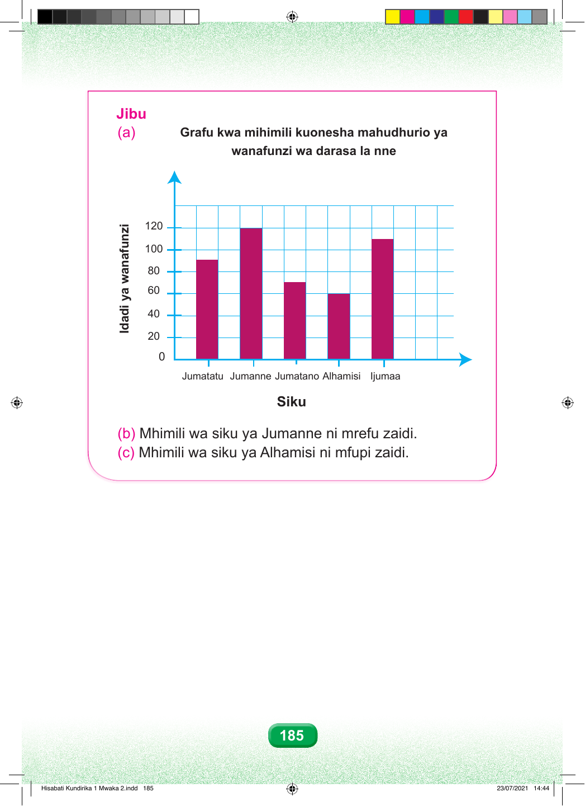

Jibu (a) 0 Jumatatu Jumanne Jumatano Alhamisi Ijumaa Siku (b) Mhimili wa siku ya Jumanne ni mrefu zaidi. (c) Mhimili wa siku ya Alhamisi ni mfupi zaidi. 185 iznufanaw ay idadI Grafu kwa mihimili kuonesha mahudhurio ya wanafunzi wa darasa la nne 120 100 80 60 40 20 Hisabati Kundirika 1 Mwaka 2.indd 185 23/07/2021 14:44